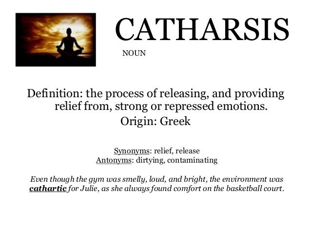

1994
Baby Chay: Part Deux

I finished my first page! Woo! So far this really has been a "cathartic" experience for me, as I had hoped, and I already feel better! SO! Let's keep going!!!
1994 was a year very similar to 1993, so it also stands out in my mind as another very special year. I again do not remember much from it though aside from the time I that I "needed a diaper" while "getting a diaper change", much to my mother's chagrin. I also remember eating...A LOT...and as you can tell in my beach pic I was RAPIDLY outgrowing my clothes as I packed on the POUNDS MASS! Other than that though, 1994 was filled with more growth, development, and learning! During this time, the time in a human's life when their age is best described in months, this is hopefully always the case! It fortunately was for me, so as such I kept on keeping on the way only Baby Chay could!